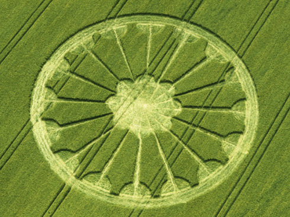

《探索生命的组合》
（二）生命原图亦称为大觉，或简称为觉。觉的本质叫原性。空间对觉的作用，或是觉对空间的作用的反应称为感。故而生命原图的表现形式就是感觉，从某种意义上说，生命原图就是感觉。
现代科学的研究认为生命遍布于宇宙，我想它像孢子一样会应机而生，而表现出适应某种特定时空的生命展现形式。遍布宇宙的生命之根亦即发源地，称为"觉海"，它是生命原图的家园，亦即人类所谓的最终根的回归之所。生命之源的特征正如古经所说：觉海性澄圆。我想那里是性光的海洋。
性是一种非物质的光，它在人体中存在，集中分布在脑和脑的延长部分，即脊椎里。它大量的存在于人体的海轮位。人体中性的凝聚并提升至人体的月轮位时，这个性光团就称为"自"。这个由性光凝聚集结成的自，尤如一轮圆月。在古佛门中又将其称为"佛面"，或"佛性"，或干脆就称其为佛。不过这里有个程度上的区别。
性光具足成为明亮的圆月之后，若再凝聚、再集结，这个性光团就会突变或升华为一轮明亮火红的大日。呈明月状时叫佛面叫佛性，呈大日状时，则谓之为佛。如此即为"佛在面前"。当人有了月有了日之后，古佛门则称为"明"。通常人是看不见性光的，更是不见月和日，这个就叫无明。
中国古道门把这个性光明月称为西天月，亦称此为"虚"，亦将西天月升华为大日时，称为白日。道门所谓的白日飞升即是如此。多年前有些气功组织的人不明真相，甚至把自焚叫做白日飞升。这是对中国古道门理论的一种错误的理解，实在是可泣可叹。
中国古佛门和古道门亦把性光大日称为真相，佛门又称此为如来真相。而在习惯上把性光月轮称为不明真相。古佛门亦有明心见性和见性成佛之说。其中心是体，性是用，心性一体不可分割。而见性是因，成佛是果，但是否成佛并不是见性的必然结果，见性仅仅是成佛的一个必然条件，亦即见性未必就能成佛。
这里所说的佛指的不是人。这里的佛指的是大觉，亦即归融性海的生命原图。就人而言，当其有了大智慧，有了大觉之后，可以比拟为佛，就像可以把人比拟为菩萨一样。
佛和菩萨具有大智慧，这是通常人类无法做到的。无法做到的原因有二，其一是具足性光形成大日真相，与虚空生命原图交流通畅无阻。其二是时空观念的升华，看事物没有视角没有立点。
下面我们重点研讨这两个问题。 
| 上 一 頁 | 下 一 頁 |